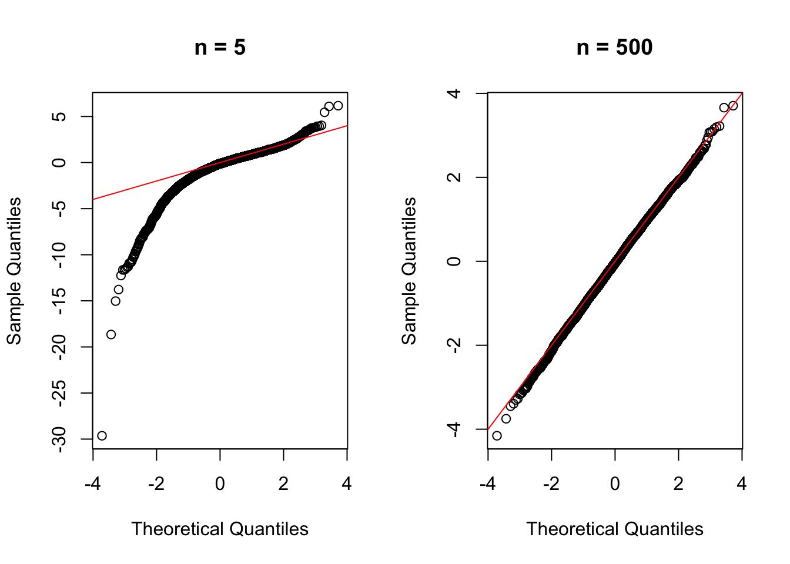

Call:
lm(formula = HTN ~ Age, data = filter(nh11, Age > 25))
Residuals:
Min 1Q Median 3Q Max
-0.7243 -0.3757 -0.1905 0.4718 0.8639
Coefficients:
Estimate Std. Error t value Pr(>|t|)
(Intercept) -0.1471438 0.0286550 -5.135 3e-07 ***
Age 0.0108926 0.0005412 20.126 <2e-16 ***
---
Signif. codes: 0 '***' 0.001 '**' 0.01 '*' 0.05 '.' 0.1 ' ' 1
Residual standard error: 0.4616 on 3079 degrees of freedom
Multiple R-squared: 0.1163, Adjusted R-squared: 0.116
F-statistic: 405 on 1 and 3079 DF, p-value: < 2.2e-16
The HTN prevalence increases with the age. The relationship is approximately linear on the logic scale. The estimated probability of HTN at age 50 is 0.3865.
Q7 b
The result shows that the estimated probability of HTN at age 70 using logistic regression and the observed prevalence among aged 70 are really close, showing the model predicts the HTN prevalence really well for age 70.
Q7 c
summary(m1)$coefficients
Estimate Std. Error z value Pr(>|z|)
(Intercept) -0.46213336 0.039529303 -11.69091 1.418656e-31
I(Age - 50) 0.04865254 0.002689984 18.08655 4.067608e-73
The estimated log odds ratio for 1 year increase in age is 0.049, and a 95% CI of (0.0434,0.054). The odds ratio is 1.0499.
Q7 d
m2 =update(m1, .~.*Sex)summary(m2)
Call:
glm(formula = HTN ~ I(Age - 50) + Sex + I(Age - 50):Sex, family = "binomial",
data = filter(nh11, Age > 25))
Coefficients:
Estimate Std. Error z value Pr(>|z|)
(Intercept) -0.679259 0.062125 -10.934 < 2e-16 ***
I(Age - 50) 0.070122 0.004251 16.496 < 2e-16 ***
Sexmale 0.357518 0.081470 4.388 1.14e-05 ***
I(Age - 50):Sexmale -0.038864 0.005569 -6.979 2.98e-12 ***
---
Signif. codes: 0 '***' 0.001 '**' 0.01 '*' 0.05 '.' 0.1 ' ' 1
(Dispersion parameter for binomial family taken to be 1)
Null deviance: 4158.6 on 3080 degrees of freedom
Residual deviance: 3727.4 on 3077 degrees of freedom
AIC: 3735.4
Number of Fisher Scoring iterations: 4
The * operator has both the main effect the interaction. The intercept shows the log odds of HTN at age 50 for the reference sex group. The age coeff is how the log odds change with age. The sex coeff is the difference between sex groups at age 50 and the interaction is whether the effect of age differs by sex.
Q8 a
All curves center at 3, and as n gets larger the curve is narrower and more samples concentrated on 3. The curve gets more symmetric when n is larger. Sample mean is closer to real mean when sample is large enough.
a. When df=3, the distribution of sample mean shorten to 0 when n is larger, conforming with the law of large numbers. When df=1, the distribution of sample mean does not change much or concentrate around 0 because the distribution has no finite mean, and the law of large numbers does not apply.
b. The other name is called Cauchy distribution. It is distinct because it does not have defined mean (no expectation and variance), The law of large numbers and CLT do not apply. The sample mean of independent standard cauchy variables has the same distribution for varied sample size.
a. As sample size increases, the distribution of the standardized sample mean approaches the standard normal distribution and showing the CLT. Limitations include a limited number of sample sizes and repetitions. It only shows one underlying distribution.
b.
par(mfrow =c(1, 2))qqnorm(x5, main ="n = 5")#y=x intercept 0 slope=1abline(0, 1, col ="red")qqnorm(x500, main ="n = 500")abline(0, 1, col ="red")

par(mfrow =c(1, 1))
From the graph, for n=5, the points deviate from the identity line espeically for the tail. For n=500, it fits closer to the line and demonstrates a better approximation to standard normal distribution.
c. When n is 5, 0.78% of the values exceed 2.576, compared with 0.5% under the normal distribution(0.5%). The 95% CI for the proportion below 2.576 does not include 0.995, while for n=500 the CI includes 0.995, which provide qualitative evidence for normal distribution.